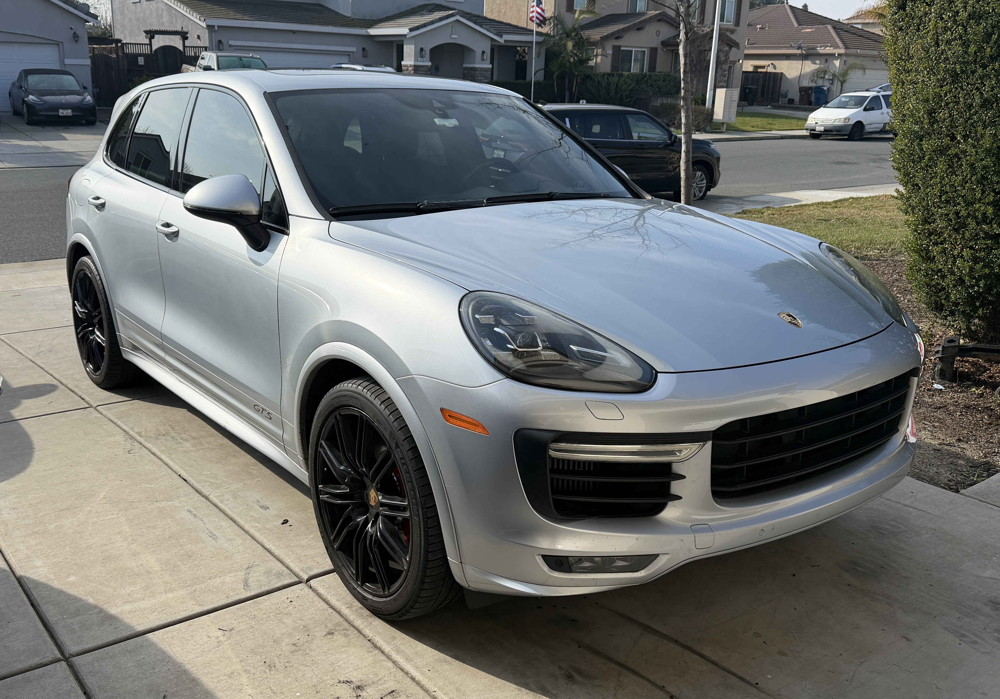
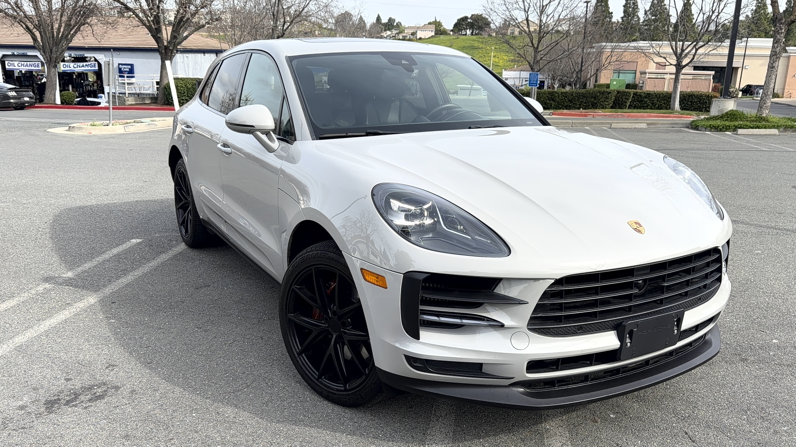

MOST WATCHED / FOUR YEARS
2016 PORSCHE
CAYENNE GTS
Owned since 2021. Four years of maintenance, reliability and depreciation — plus the question that matters after the honeymoon period: would I buy it again?
WATCH STORY ↗The cars after the purchase.
The purchase is only the beginning. Real ownership means maintenance, reliability, depreciation, performance — and the details you only learn after living with the car.

Owned since 2021. Four years of maintenance, reliability and depreciation — plus the question that matters after the honeymoon period: would I buy it again?
WATCH STORY ↗Living with the rarest Porsche in the Lakache Auto garage: a Copper Ruby Metallic GTS Sport Turismo that combines V8 performance, wagon practicality and a very different ownership proposition.
WATCH STORY ↗

A real-world look at the Macan S from one of the final years of this interior generation — physical controls, V6 performance and the balance between daily usability and Porsche character.
WATCH STORY ↗Reviews tell you what a car feels like for a day. Ownership tells you what it asks from you over time. These stories focus on the second part — what lasts, what costs money, what surprises you and whether the car still feels worth owning years later.